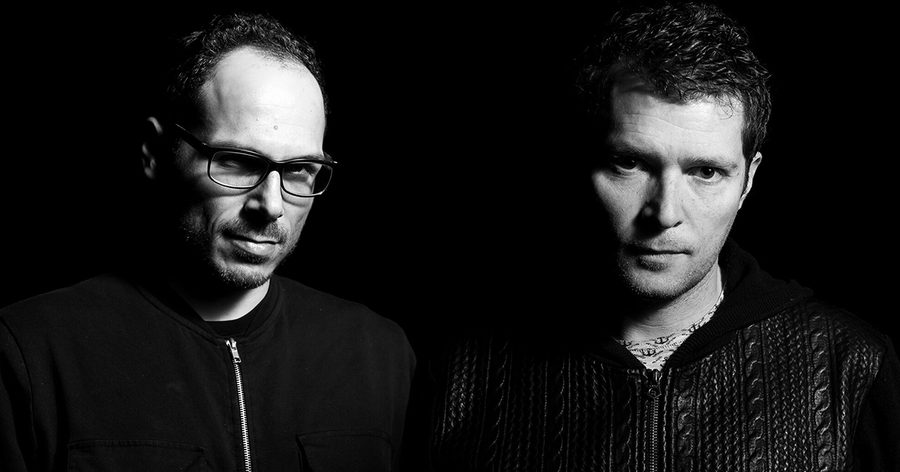

Metronome #164: Raw District


Insomniac’s Metronome series features mixes from some of today’s fastest-rising electronic stars, as well as championed legends. It takes listeners deep across a wide range of genres, movements, cultures, producers, artists and sounds that make up the diverse world of electronic music.
Vernon Bara and Massimo DaCosta are simply a relentless pair of artists. The Belgians originally met around 2000, soon deciding to join forces under the name Vernon & DaCosta. They quickly gained a fair amount of ground in the scene, pumping out solid house tracks for labels such as OFF Recordings, Aroma, OM Records, and more. They handled remixes for everyone from Style of Eye to JT Donaldson, and they have been given accolades from the likes of DJ Sneak and Ricardo Villalobos. In 2010, they even started their own imprint, Homecoming Music, to release music by friends and similarly minded artists.
Despite all of this, a few short years later in 2013, it would be time for the duo to stretch their horizons even further. Allowing themselves to explore new areas of four-on-the-floor music, Bara and DaCosta donned the fresh moniker of Raw District. Soon, they began to push out deeper, darker, and more organic sounds. Never ones to give anything less than 100 percent, Raw District has put out music on the likes of Crosstown Rebels, Defected, and Souvenir Music, and they are known for their mesmerizingly deep and heady DJ sets under this secondary title. Outside of a residency in Belgium’s legendary Labyrinth Club, they’ve also rocked the decks at Pacha Barcelona, Circoloco at DC-10, Fuse Club, and many more.
The duo now has several new releases in the works, including a new EP for Crosstown Rebels, Lay Your Weapons Down, which hit shelves last week. Today, they’re leaving a deep and grooving mix with us that hits all the way down to the marrow, with body-moving funk, throwback house style, sounds from space, and warehouse hits for after midnight.
What was the clear decision to start a new project under the name Raw District, and what does that name mean to you both?
Massimo: I truly believe that a production project must evolve, as does the music and the world. After more than 10 years of production, everything around us was changing: the music industry, the technology, the way of making music, the way of playing music. We really enjoyed what we did under our Vernon & DaCosta moniker, but it was a good moment to close the chapter and start something new, exploring some other sides and influences.
How would you explain the distinct difference between Raw District and Vernon & DaCosta?
Vernon: When we started Raw District six years ago, we had the goal to explore something different. We wanted to stay close to our first soul-funk or old-school influences but definitively wanted to try and bring something fresh and original to our music. We had no idea of what it would sound like from one day to the next.
Massimo: We really wanted to explore what we were capable of, versus releasing house tracks following the same patterns and influences.
“Lay Your Weapons Down” is a big tune that seems to mix cold and dark house sounds with an accessible style. What was your idea for this release, and what was the process like?
Massimo: We are old-school guys who grew up with classic vocal tunes produced by heroes from New York, Chicago or Detroit—such Frankie Knuckles, Masters at Work, Moodymann, Theo Parrish, Normal Jean Bell, Ron Hardy or Kerri Chandler, to name a few. All their big hits were designed with the same ingredients to make people dance, focused on the flow of the track, full of raw vibes, groovy bassline, and lots of laid-back groove. Of course, we will never compare ourselves to those legends, but we see their work as bright guidance on how to achieve properly what we want.
Vernon: Those were indeed key elements in the track we did with Fabrice and Just Her. Fabrice is a longtime friend, and we really wanted to take a chance to work on something together. We had this vocal from Just Her we took away from some previous collab we did in the past with her and started developing the tune around it. Fabrice brought his amazing analog mastering skills. We had some great times working together on this project. I think our sounds work really well together, so I hope we can get back in the studio in the future to create another EP.
Both of you seem to have a high-paced work ethic and push for success in your endeavors. Do you feel this is true, and how does it manifest for you both when tackling new ideas?
Massimo: My grandparents immigrated to Belgium from Italy in the ‘50s to work in the coal mines. Hard work, respect, dedication, loyalty, and honesty were all marks of the education they gave to my parents and, I hope, the legacy I also received. In everything I do, I try to apply those values. When you work with someone—especially in a creative process—you have to pay a lot of attention to those human values to make sure to get the best of yourself and from the other.
Do you foresee starting a new project in the future, or just expanding the parameters of the ones you already have?
Massimo: To succeed in a project, you have to put full focus on it. Spending time on secondary priorities is the reason you have 10 half-finished projects instead of one completed one. Raw District remains our #1 priority; we want to focus all our energies fully into it.
Vernon: I agree. Doing a full Raw District live is maybe something we want to experiment, but nothing seriously set up for now.
Outside of the Crosstown Rebels EP, you have new music coming out on Get Physical and This and That Lab, correct? Anything you want to mention about those releases?
Massimo: Our next EP is coming out early April on Get Physical, and just as the new release on Crosstown, it features collaboration with friends. This forthcoming EP is including “Love for Free,” a follow-up of our two previous tunes with Aquarius Heaven and “A Beautiful Black Woman,” which is a trippy, cosmic late-night house tune we did with our friend Siopis.
Vernon: It’s been years we have been talking with the Get Physical guys. Of course, big fan of the label, we were looking for a good project to release with them. When both tracks were done, it came straight to our mind that the bundle would fit perfectly with Get Physical.
You already have Get Lost Miami and Extrema Outdoor Belgium in 2019. What are you looking forward to the most at those, and are there any other big events coming up that you can mention?
Massimo: Get Lost Miami promises to be amazing. Despite the fact that I didn’t make it to Miami since 2010, it’s such an amazing feeling to belong to such a great family and being part of this amazing lineup of talented artists. I’m really looking forward spending great times with Damian and the guys over there.
Vernon: We are really looking forward to the festival season, which is about to start with Extrema Outdoor early June. We gonna play this great festival for the sixth time in a row. Some more great festivals are already booked for the season, but I can’t tell more for now. 😉
Beyond all of this, what does the rest of 2019 and beyond look like for Raw District?
Massimo: A lot of new music, new friends, and great parties.
Jay Hill & Lazarusman “I Am Here” (Richy Ahmed Remix)
Vernon “Woosa”
Kima Pixa “Space Flowers”
Raw District & DkA “Dans Tes Bras”
Fabio Aura ft. Toshi “Yini” (Serge Devant remix)
Hector “Flu Plus” (Rolando remix)
Cassius “W18” (Nick Curly Dub Mix)
Robbie Hardkiss “Get Up”
Ae:Ther “Stardancer”
Raw District & Fabrice Lig ft. Just Her “Lay Your Weapons Down”
Mathias Mesteno “Inbetween”
Emery Warman, Roland Clark “Prove Them Wrong”
Raw District’s Lay Your Weapons Down is available here.
Follow Raw District on Facebook | SoundCloud